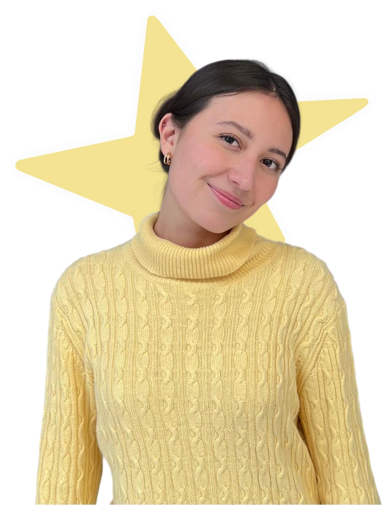

Diseño Gráfico Digital
Licenciatura
Universidad La Salle
Hola, soy
Convierto tus ideas en mensajes visuales que se entienden y se recuerdan.

Soy Daniela Róo, tengo 21 años y soy de la CDMX. Curso el séptimo semestre de la Licenciatura en Diseño Gráfico Digital.
Me apasiona crear mensajes visuales que se adapten a cada cliente y ayuden a resolver problemas reales. Disfruto explorar el UX, la animación y el modelado 3D.
Fuera del diseño, me encuentras en el cine —sobre todo si es de terror— o escuchando música.
Distintas ideas.
Una mirada propia.
Cada proyecto tiene una historia. Haz clic para descubrirla.
Licenciatura
Universidad La Salle
UX/UI
Diseño centrado en las personas
Español · Lengua nativa
Inglés · Nivel alto
Juegos y talleres para niños pequeños. Me coordino con otros animadores para llevar adelante las actividades y crear una experiencia divertida.
Proyecto editorial sobre la música sonidera.
Herramientas para imaginar. Habilidades para resolver.
Hay mucho más por crear.
Conoce más de mi trabajo en Behance.